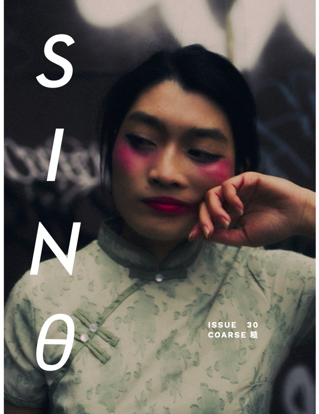

ORDER SINθ #30 NOW
Dregs of ground coffee at the bottom of a mug. Gravel gritting against bare soles. Marking sinθ magazine’s 30th issue, “COARSE 糙” excavates the sensation of touch with all its pleasures and repulsions, its silk and rubber textures. Confront skin-to-skin intimacy, rough frontiers, intimacies carved from the soul and placed at your table.
- Editor-in-Chief Jiaqi Kang speaks with Maegan Houang about violence and voyeurism in experiencing art and the impact of the labor movement on Houang’s filmmaking.
- Senior Editor Yue Chen connects with Lisa Ko about her upcoming novel Memory Piece and the role of art under capitalism.
- Web Editor Joanne Zou converses with indie singer-songwriter Linying about her new EP House Mouse and maintaining optimism throughout her musical journey.
- For our student spotlight, Junior Editor Erika Jing talks to the youth-driven coalition Students for the Preservation of Chinatown (SPOC) about envisioning the future of Philadelphia’s Chinatown through printmaking and advocacy.
- Josephine Wu’s short story “Slaughterhouse” presents a duck named Melon and a trip to the titular Slaughterhouse.
- Poetry by Lucy Xiang-fu Wainger, Winniebell Zong and cindy j xie sizzles, prickles and provokes.
- Anurak Saelaow engulfs us with two richly evocative poems, while Mimi Yang traces some of their journey in reconciling with queerness.
- A poem by Cynthia Chen and a personal essay from Taylor Zhang offer touching reflections on grief for a family member and a dear pet.
- Coffee’s enthralling pencil sketches zoom in on the human body.
- Jasmine Lu’s photographs of Elly Lee reconfigure ideas of femininity with assistance from Kelsey Phung and Steven Cheung, and makeup by Audrey Tian.
Front cover by Jasmine Lu.